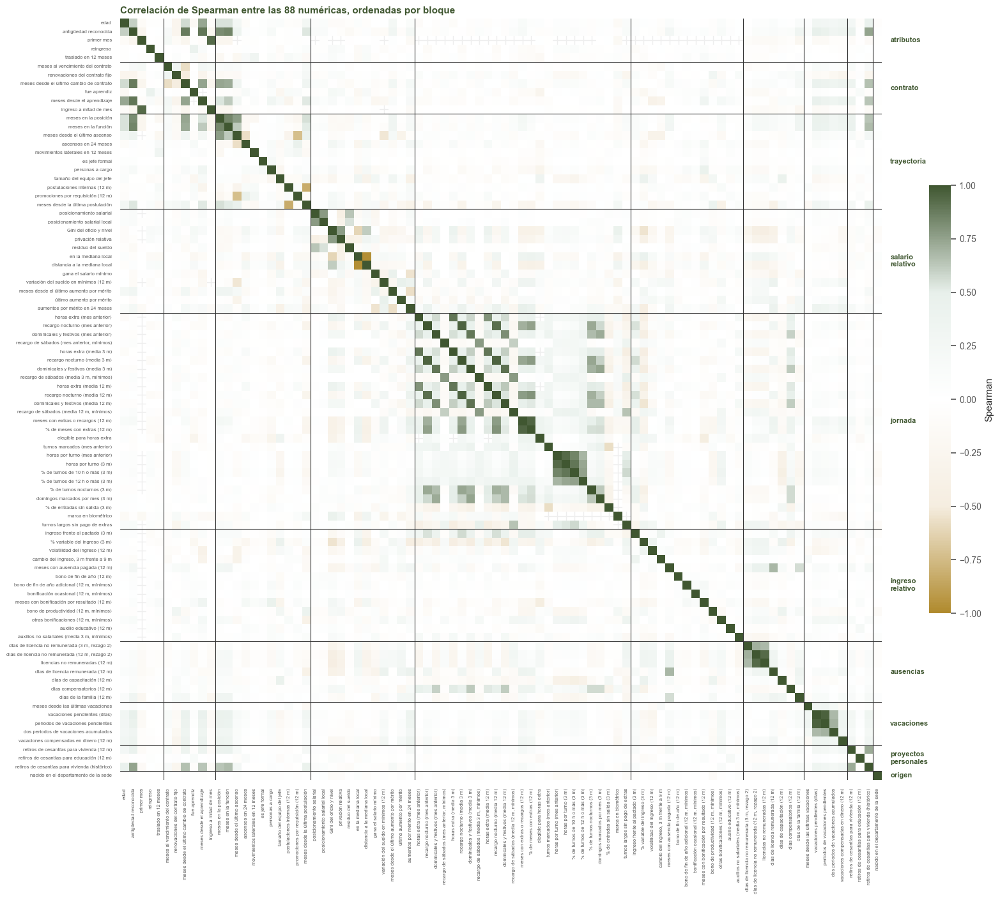
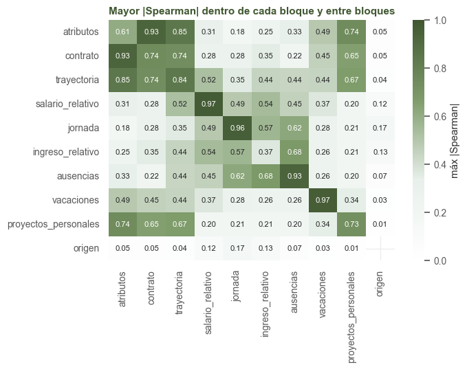
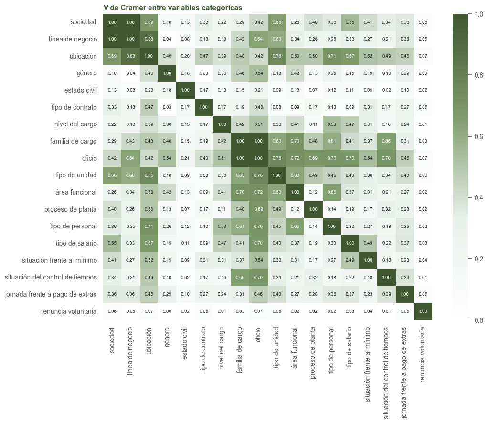
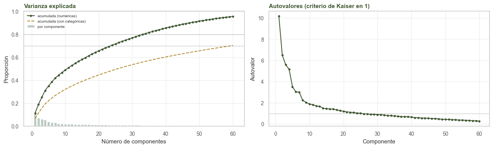
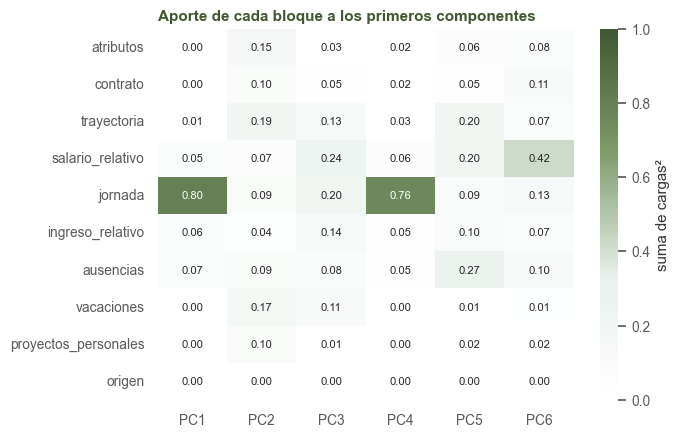
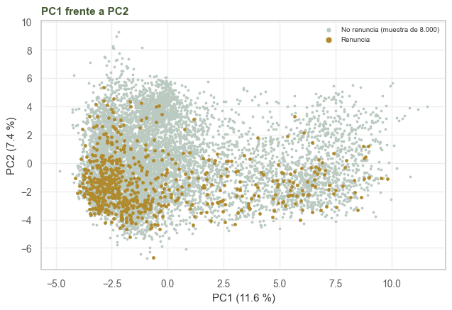
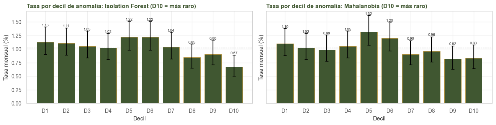
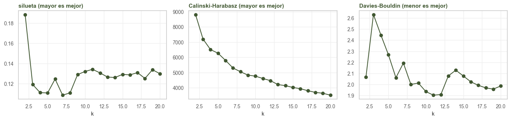

4. EDA multivariado#
Alcance
Este capítulo usa solo el entrenamiento (67.416 persona-mes, 688 renuncias) y la semilla 2026 en todo lo aleatorio. Toda transformación (mediana, percentiles de recorte, media y desviación) se estima con el entrenamiento; el test no se toca hasta el capítulo 7.
El capítulo anterior miró cada variable frente al objetivo. Aquí se miran las variables entre sí, con cuatro preguntas que condicionan el modelo: qué variables repiten la misma información (correlación, V de Cramér y VIF), cuántas dimensiones efectivas tiene la historia laboral (PCA), si hay filas raras que renuncien distinto (atípicos multivariados) y si hay subpoblaciones naturales (k-medias). Con 85 numéricas repartidas en 9 bloques más los atributos, el análisis se organiza por bloque y se resume en tablas; los gráficos se reservan para lo que no cabe en una tabla.
import os
os.environ.setdefault('OMP_NUM_THREADS', '4') # otros procesos usan la CPU
import sys
import warnings
import numpy as np
import pandas as pd
import matplotlib.pyplot as plt
import seaborn as sns
from scipy.stats import chi2
from statsmodels.stats.outliers_influence import variance_inflation_factor
from statsmodels.tools import add_constant
from sklearn.compose import ColumnTransformer
from sklearn.pipeline import make_pipeline
from sklearn.impute import SimpleImputer
from sklearn.preprocessing import StandardScaler, OneHotEncoder
from sklearn.decomposition import PCA
from sklearn.ensemble import IsolationForest
from sklearn.cluster import KMeans
from sklearn.metrics import (silhouette_score, calinski_harabasz_score, davies_bouldin_score,
adjusted_rand_score, roc_auc_score)
sys.path.insert(0, '.')
warnings.filterwarnings('ignore')
from comun import (cargar, particion, estilo, tasa_ic, v_cramer, OBJETIVO, NUM, BIN, CAT, BLOQUES,
BLOQUE, NOMBRE, SEMILLA, VERDE, ORO, TINTA, GRIS, GRIS_CL, BORDE)
estilo()
pd.set_option('display.width', 200)
tr, _ = particion(cargar())
y = tr[OBJETIVO].to_numpy()
rng = np.random.default_rng(SEMILLA)
def nom(c):
return NOMBRE.get(c, c)
# numéricas ordenadas por bloque: primero los atributos (edad, antigüedad y las 3 binarias)
ORDEN_BLOQUES = ['atributos'] + list(BLOQUES)
NUMS = sorted(NUM + BIN, key=lambda c: (ORDEN_BLOQUES.index(BLOQUE[c]), (NUM + BIN).index(c)))
print(f'entrenamiento: {len(tr):,} filas | {int(y.sum())} renuncias | {len(NUMS)} numéricas y binarias '
f'| {len(CAT)} categóricas')
print(pd.Series([BLOQUE[c] for c in NUMS]).value_counts().reindex(ORDEN_BLOQUES).to_string())
entrenamiento: 67,416 filas | 688 renuncias | 88 numéricas y binarias | 17 categóricas
atributos 5
contrato 6
trayectoria 11
salario_relativo 12
jornada 25
ingreso_relativo 13
ausencias 7
vacaciones 5
proyectos_personales 3
origen 1
Son 88 columnas: las 85 numéricas (incluidas las binarias 0/1 de la historia) más las 3 binarias de atributos (primer mes, reingreso, traslado). Las 5 variables que el capítulo 1 dejó fuera (entre ellas el contrato fijo, idéntico al tipo de contrato, y las que siguen el calendario de la reducción legal de la jornada, que se trata en el capítulo 5) no entran. Jornada es el bloque más grande (25), porque cada concepto de tiempo (horas extra, recargo nocturno, dominicales, sábados) viene en tres ventanas.
4.1. Correlación entre numéricas (Spearman)#
Se usa Spearman porque la mayoría de estas variables son conteos con muchos ceros y colas largas (capítulo 3): la correlación de rangos no depende de la escala ni de unos pocos valores extremos. Los faltantes se excluyen par a par, de modo que una correlación con una variable de muchos faltantes (por ejemplo, meses desde que fue aprendiz, 95 % nulo) describe solo a las filas que la tienen.
R = tr[NUMS].corr(method='spearman')
cortes = np.cumsum([sum(BLOQUE[c] == b for c in NUMS) for b in ORDEN_BLOQUES])[:-1]
fig, ax = plt.subplots(figsize=(17, 15))
sns.heatmap(R, cmap='oro_verde', center=0, vmin=-1, vmax=1, ax=ax, square=True,
xticklabels=[nom(c) for c in NUMS], yticklabels=[nom(c) for c in NUMS],
cbar_kws={'shrink': 0.5, 'label': 'Spearman'})
for c in cortes:
ax.axhline(c, color=TINTA, lw=0.8)
ax.axvline(c, color=TINTA, lw=0.8)
ax.tick_params(labelsize=5.5)
posiciones = np.r_[0, cortes, len(NUMS)]
for b, a, z in zip(ORDEN_BLOQUES, posiciones[:-1], posiciones[1:]):
ax.text(len(NUMS) + 1, (a + z) / 2, b.replace('_', '\n'), va='center', fontsize=8, color=VERDE, fontweight='bold')
ax.set(title=f'Correlación de Spearman entre las {len(NUMS)} numéricas, ordenadas por bloque')
plt.tight_layout()
plt.show()

# resumen por bloque: la mayor |r| dentro de cada bloque y entre cada par de bloques
A = R.abs().where(~np.eye(len(R), dtype=bool))
por_bloque = A.groupby(lambda c: BLOQUE[c]).max().T.groupby(lambda c: BLOQUE[c]).max()
por_bloque = por_bloque.loc[ORDEN_BLOQUES, ORDEN_BLOQUES]
fig, ax = plt.subplots(figsize=(7, 5.5))
sns.heatmap(por_bloque, annot=True, fmt='.2f', cmap='verde', vmin=0, vmax=1, ax=ax,
annot_kws={'size': 8}, cbar_kws={'label': 'máx |Spearman|'})
ax.set(title='Mayor |Spearman| dentro de cada bloque y entre bloques', xlabel='', ylabel='')
plt.tight_layout()
plt.show()

i, j = np.triu_indices(len(R), 1)
pares = pd.DataFrame({'variable_1': R.index[i], 'variable_2': R.columns[j], 'spearman': R.values[i, j]})
pares['bloque_1'] = pares.variable_1.map(BLOQUE)
pares['bloque_2'] = pares.variable_2.map(BLOQUE)
pares['|r|'] = pares.spearman.abs()
fuertes = pares[pares['|r|'] > 0.7].sort_values('|r|', ascending=False)
print(f'pares con |r| > 0,7: {len(fuertes)} de {len(pares):,} | con |r| > 0,95: '
f'{(fuertes["|r|"] > 0.95).sum()} | entre bloques distintos: '
f'{(fuertes.bloque_1 != fuertes.bloque_2).sum()}')
print(f'variables involucradas: {len(set(fuertes.variable_1) | set(fuertes.variable_2))}')
pares con |r| > 0,7: 50 de 3,828 | con |r| > 0,95: 4 | entre bloques distintos: 9
variables involucradas: 45
# tabla completa de los pares con |r| > 0,7
fuertes[['variable_1', 'variable_2', 'bloque_1', 'bloque_2', 'spearman']].round(3).reset_index(drop=True)
Show code cell output
| variable_1 | variable_2 | bloque_1 | bloque_2 | spearman | |
|---|---|---|---|---|---|
| 0 | en_mediana_local | dist_mediana_local | salario_relativo | salario_relativo | -0.974 |
| 1 | dias_vacaciones_pendientes | periodos_vacaciones_pendientes | vacaciones | vacaciones | 0.968 |
| 2 | recargo_nocturno_1m | recargo_nocturno_3m | jornada | jornada | 0.960 |
| 3 | recargo_nocturno_3m | recargo_nocturno_12m | jornada | jornada | 0.956 |
| 4 | meses_con_extras_12m | pct_meses_con_extras_12m | jornada | jornada | 0.950 |
| 5 | horas_turno_1m | horas_turno_3m | jornada | jornada | 0.936 |
| 6 | primer_mes | ingreso_a_mitad | atributos | contrato | 0.935 |
| 7 | dias_licencia_no_remunerada_12m_r2 | licencias_no_remuneradas_12m | ausencias | ausencias | 0.934 |
| 8 | recargo_nocturno_1m | recargo_nocturno_12m | jornada | jornada | 0.916 |
| 9 | dominicales_3m | dominicales_12m | jornada | jornada | 0.914 |
| 10 | horas_extra_1m | horas_extra_3m | jornada | jornada | 0.897 |
| 11 | dominicales_1m | dominicales_3m | jornada | jornada | 0.893 |
| 12 | antig_meses | meses_desde_aprendiz | atributos | contrato | 0.892 |
| 13 | horas_extra_3m | horas_extra_12m | jornada | jornada | 0.892 |
| 14 | horas_turno_3m | pct_turnos_10h_3m | jornada | jornada | 0.892 |
| 15 | antig_meses | meses_desde_cambio_contrato | atributos | contrato | 0.880 |
| 16 | antig_meses | meses_en_funcion | atributos | trayectoria | 0.847 |
| 17 | horas_turno_1m | pct_turnos_10h_3m | jornada | jornada | 0.847 |
| 18 | meses_en_posicion | meses_en_funcion | trayectoria | trayectoria | 0.836 |
| 19 | antig_meses | meses_en_posicion | atributos | trayectoria | 0.825 |
| 20 | postulaciones_internas_12m | meses_desde_postulacion | trayectoria | trayectoria | -0.821 |
| 21 | dominicales_1m | dominicales_12m | jornada | jornada | 0.815 |
| 22 | horas_extra_1m | horas_extra_12m | jornada | jornada | 0.804 |
| 23 | recargo_nocturno_12m | pct_meses_con_extras_12m | jornada | jornada | 0.800 |
| 24 | sabados_smmlv_1m | sabados_smmlv_3m | jornada | jornada | 0.780 |
| 25 | sabados_smmlv_3m | sabados_smmlv_12m | jornada | jornada | 0.779 |
| 26 | recargo_nocturno_3m | pct_meses_con_extras_12m | jornada | jornada | 0.776 |
| 27 | posicionamiento | posicionamiento_local | salario_relativo | salario_relativo | 0.776 |
| 28 | gini_oficio_nivel | privacion_oficio_nivel | salario_relativo | salario_relativo | 0.770 |
| 29 | meses_en_posicion | meses_desde_ascenso | trayectoria | trayectoria | 0.769 |
| 30 | recargo_nocturno_12m | meses_con_extras_12m | jornada | jornada | 0.768 |
| 31 | pct_turnos_10h_3m | pct_turnos_12h_3m | jornada | jornada | 0.754 |
| 32 | recargo_nocturno_1m | pct_meses_con_extras_12m | jornada | jornada | 0.753 |
| 33 | meses_desde_cambio_contrato | meses_desde_aprendiz | contrato | contrato | 0.744 |
| 34 | antig_meses | cesantias_vivienda_historico | atributos | proyectos_personales | 0.744 |
| 35 | dominicales_3m | domingos_3m | jornada | jornada | 0.744 |
| 36 | edad | meses_desde_aprendiz | atributos | contrato | 0.742 |
| 37 | horas_turno_3m | pct_turnos_12h_3m | jornada | jornada | 0.741 |
| 38 | recargo_nocturno_3m | pct_turnos_nocturnos_3m | jornada | jornada | 0.740 |
| 39 | meses_desde_cambio_contrato | meses_en_posicion | contrato | trayectoria | 0.735 |
| 40 | recargo_nocturno_3m | meses_con_extras_12m | jornada | jornada | 0.735 |
| 41 | meses_desde_ascenso | requisicion_promocion_12m | trayectoria | trayectoria | -0.732 |
| 42 | recargo_nocturno_1m | pct_turnos_nocturnos_3m | jornada | jornada | 0.731 |
| 43 | cesantias_vivienda_12m | cesantias_vivienda_historico | proyectos_personales | proyectos_personales | 0.726 |
| 44 | meses_desde_cambio_contrato | meses_en_funcion | contrato | trayectoria | 0.725 |
| 45 | dominicales_1m | domingos_3m | jornada | jornada | 0.719 |
| 46 | dias_licencia_no_remunerada_3m_r2 | dias_licencia_no_remunerada_12m_r2 | ausencias | ausencias | 0.709 |
| 47 | recargo_nocturno_1m | meses_con_extras_12m | jornada | jornada | 0.705 |
| 48 | recargo_nocturno_12m | pct_turnos_nocturnos_3m | jornada | jornada | 0.704 |
| 49 | dominicales_3m | pct_turnos_nocturnos_3m | jornada | jornada | 0.700 |
Se evidencia que la redundancia está concentrada y tiene dos orígenes claros:
Ventanas de un mismo concepto. De los 50 pares con |r| > 0,7, la mayoría son el mismo concepto medido en 1, 3 y 12 meses: recargo nocturno (0,96 entre 1 y 3 meses; 0,96 entre 3 y 12), dominicales (0,89-0,91), horas extra (0,80-0,90), horas por turno (0,94) y sábados (0,78). También son casi duplicados por construcción días y periodos de vacaciones pendientes (0,97), estar en la mediana local y la distancia a ella (-0,97), meses con extras y su porcentaje (0,95), y días y número de licencias no remuneradas (0,93). Los 4 pares por encima de 0,95 son los de la mediana local, las vacaciones pendientes y dos de las ventanas de recargo nocturno.
El tiempo en la empresa. La antigüedad reconocida se mueve con todo lo que cuenta meses desde algo: meses desde el cambio de contrato (0,88), en la función (0,85), en la posición (0,83), desde que fue aprendiz (0,89) y el histórico de retiros de cesantías para vivienda (0,74). Estos explican casi todos los 10 pares que cruzan bloques. El primer mes y el ingreso a mitad de mes (0,94) son la misma marca de ingreso.
El resumen por bloque confirma que, fuera de ese grupo, los bloques están poco correlacionados entre sí: ningún par entre salario relativo, jornada, ingreso relativo, ausencias y vacaciones supera 0,7 (el mayor es 0,68, entre ingreso relativo y ausencias, por los meses con ausencia pagada). La historia no es una copia de los atributos, sino información nueva. Dentro de cada bloque la redundancia es mayor en jornada (las ventanas); en ingreso relativo ningún par pasa de 0,4. Las celdas en blanco del mapa grande son pares sin correlación definida: por ejemplo, el primer mes con las variables de nómina, que están vacías justo en el primer mes (llegan con un mes de rezago), de modo que en las filas donde existen el primer mes vale siempre 0.
4.2. Asociación entre categóricas (V de Cramér)#
variables = CAT + [OBJETIVO]
V = pd.DataFrame(np.eye(len(variables)), index=variables, columns=variables)
for a_i, a in enumerate(variables):
for b in variables[a_i + 1:]:
V.loc[a, b] = V.loc[b, a] = v_cramer(tr[a], tr[b])
fig, ax = plt.subplots(figsize=(11, 9))
sns.heatmap(V, annot=True, fmt='.2f', cmap='verde', vmin=0, vmax=1, ax=ax, annot_kws={'size': 7},
xticklabels=[nom(c) for c in variables], yticklabels=[nom(c) for c in variables])
ax.set(title='V de Cramér entre variables categóricas')
plt.tight_layout()
plt.show()
k_i, k_j = np.triu_indices(len(CAT), 1)
pv = pd.DataFrame({'variable_1': np.array(CAT)[k_i], 'variable_2': np.array(CAT)[k_j],
'V': V.loc[CAT, CAT].values[k_i, k_j]})
print('pares de categóricas con V > 0,7:')
print(pv[pv.V > 0.7].sort_values('V', ascending=False).round(3).to_string(index=False))
print('\nV con el objetivo (las 5 mayores):')
print(V[OBJETIVO].drop(OBJETIVO).sort_values(ascending=False).head(5).round(3).to_string())

pares de categóricas con V > 0,7:
variable_1 variable_2 V
sociedad linea 1.000
familia_cargo oficio 0.995
linea ubicacion 0.879
oficio tipo_unidad 0.759
ubicacion tipo_unidad 0.757
oficio area_funcional 0.721
ubicacion tipo_costos 0.710
familia_cargo area_funcional 0.704
oficio estado_gestion_tiempos 0.703
oficio tipo_costos 0.701
V con el objetivo (las 5 mayores):
oficio 0.075
ubicacion 0.069
sociedad 0.063
tipo_unidad 0.056
contrato 0.052
# anidamiento exacto: indicadoras de sociedad y de línea juntas
D = add_constant(pd.get_dummies(tr[['sociedad', 'linea']], drop_first=True, dtype=float))
print(f'sociedad + línea: {D.shape[1]} columnas, rango {np.linalg.matrix_rank(D.to_numpy())}')
D = add_constant(pd.get_dummies(tr[['oficio', 'familia_cargo']], drop_first=True, dtype=float))
print(f'oficio + familia de cargo: {D.shape[1]} columnas, rango {np.linalg.matrix_rank(D.to_numpy())}')
sociedad + línea: 27 columnas, rango 22
oficio + familia de cargo: 57 columnas, rango 44
Los pares con V próxima a 1 son anidamientos por construcción: cada sociedad pertenece a una sola línea (V = 1,00) y cada oficio a una sola familia de cargo (0,995). Las dos comprobaciones de rango lo hacen exacto: las indicadoras de sociedad y línea suman 27 columnas pero solo 22 son independientes, y las de oficio y familia, 57 columnas con rango 44. En esas matrices el VIF de las indicadoras de la variable gruesa es infinito y los coeficientes de una logística sin penalización no están identificados. Le siguen anidamientos parciales (ubicación en línea, 0,88; oficio y ubicación en tipo de unidad, 0,76; oficio en área funcional y en la situación del control de tiempos, 0,72 y 0,70) que dicen lo mismo: la organización se describe con varias variables que se contienen unas a otras. Ninguna categórica tiene una asociación fuerte con el objetivo: la mayor es la del oficio (V = 0,075), como se espera con una clase del 1 %.
4.3. Preparación de las numéricas#
El VIF, el PCA, los atípicos y los conglomerados necesitan una matriz sin faltantes y en una escala común. Se aplica la preparación del modelo descrita en el capítulo 3 (recorte p1-p99 y logaritmo con signo en las de cola larga), seguida de la imputación con la mediana y la estandarización; todo el resto del capítulo se calcula sobre esa matriz de las 88 numéricas del entrenamiento.
def preparar(df, cols):
"""El mismo orden y criterio que el Recorte del capítulo 7: con los valores observados, recorta en
p1-p99 y aplica log con signo si |asimetría| > 2 después del recorte; luego imputa la mediana. Todo
se estima con el entrenamiento (este capítulo no toca el test). Las binarias solo se imputan."""
X = df[cols].astype(float).copy()
recortadas, con_log = [], []
for c in cols:
x = X[c]
if x.dropna().nunique() > 2:
bajo, alto = x.quantile([0.01, 0.99])
if alto > bajo:
x = x.clip(bajo, alto)
recortadas.append(c)
obs = x.dropna()
if abs((((obs - obs.mean()) / obs.std(ddof=0)) ** 3).mean()) > 2:
x = np.sign(x) * np.log1p(x.abs())
con_log.append(c)
X[c] = x.fillna(x.median())
constantes = [c for c in cols if X[c].std() == 0]
return X.drop(columns=constantes), recortadas, con_log, constantes
Xn, recortadas, con_log, constantes = preparar(tr, NUMS)
COLS = list(Xn.columns)
Zs = ((Xn - Xn.mean()) / Xn.std()).to_numpy()
print(f'recortadas en p1-p99: {len(recortadas)} | con log con signo (|asimetría| > 2 tras el recorte): '
f'{len(con_log)} | constantes tras imputar (fuera): {constantes}')
print(f'matriz numérica: {Zs.shape[0]:,} x {Zs.shape[1]}')
# variables que comparten exactamente el patrón de faltantes
faltan = tr[NUMS].isna()
faltan = faltan.loc[:, faltan.any()]
patron = faltan.T.apply(lambda s: hash(tuple(s)), axis=1)
grupos_nulos = faltan.columns.groupby(patron)
print(f'\n{faltan.shape[1]} variables con faltantes forman {len(grupos_nulos)} patrones distintos; '
'los que comparten 3 o más variables:')
for _, cols in sorted(grupos_nulos.items(), key=lambda kv: -len(kv[1])):
if len(cols) >= 3:
print(f' {100 * faltan[cols[0]].mean():.1f} % faltante | {len(cols)} variables | '
f'bloques {sorted(set(BLOQUE[c] for c in cols))}')
recortadas en p1-p99: 72 | con log con signo (|asimetría| > 2 tras el recorte): 39 | constantes tras imputar (fuera): []
matriz numérica: 67,416 x 88
54 variables con faltantes forman 22 patrones distintos; los que comparten 3 o más variables:
2.4 % faltante | 20 variables | bloques ['ingreso_relativo', 'jornada']
44.4 % faltante | 5 variables | bloques ['jornada']
43.4 % faltante | 3 variables | bloques ['jornada']
34.4 % faltante | 3 variables | bloques ['salario_relativo']
9.8 % faltante | 3 variables | bloques ['jornada']
Se recortaron 72 de las 88 columnas (las demás son binarias o tienen el percentil 1 igual al 99) y 39 recibieron el log con signo; ninguna quedó constante. Se observa la estructura de los faltantes: las 54 variables con nulos forman solo 22 patrones, y los grandes son bloques enteros que faltan juntos. Las 5 y 3 variables que se calculan con las marcas biométricas faltan en el 44 % y el 43 % de las filas, las 3 de la mediana local en el 34 %, y 20 variables de jornada e ingreso que salen de la nómina faltan juntas en el mismo 2,4 % de las filas. Este último es el primer mes de cada episodio: la nómina y las marcaciones de la fila del mes t llegan hasta t-1, y en el primer mes no hay mes anterior que medir. Como las 54 variables forman solo 22 patrones, sus indicadores de faltante están muy correlacionados (dentro de un patrón son idénticos), una redundancia que la logística regularizada absorbe como la de las ventanas; el carácter informativo de estos faltantes se trata en el capítulo 1. La imputación con la mediana crea además un pico artificial en esas columnas, que se verá en el PCA y en los atípicos.
4.4. Factor de inflación de la varianza (VIF)#
El VIF de una columna mide cuánto se infla la varianza de su coeficiente porque las demás la
explican: \(\text{VIF}_j = 1 / (1 - R_j^2)\), con \(R_j^2\) el de la regresión de la columna \(j\) contra
todas las demás y una constante (add_constant; sin constante el \(R^2\) no está centrado y el VIF sale
mal). Se lee con los umbrales usuales: 1 es ausencia de colinealidad, de 1 a 5 es baja, de 5 a 10
moderada y más de 10 alta. Se calcula sobre las 88 numéricas ya imputadas, recortadas y estandarizadas
del entrenamiento, que es la matriz que verá el modelo.
Xv = add_constant(pd.DataFrame(Zs, columns=COLS))
vif = pd.Series([variance_inflation_factor(Xv.values, k) for k in range(1, Xv.shape[1])], index=COLS)
clase = pd.cut(vif.rename('VIF'), [0, 5, 10, np.inf], labels=['1-5 (baja)', '5-10 (moderada)', '> 10 (alta)'],
right=False)
tabla = pd.crosstab(pd.Series([BLOQUE[c] for c in COLS], index=COLS, name='bloque'), clase)
tabla = tabla.reindex(ORDEN_BLOQUES)
tabla.loc['total'] = tabla.sum()
print(f'VIF mediano {vif.median():.1f} | máximo {vif.replace(np.inf, np.nan).max():,.0f} | '
f'infinitos: {np.isinf(vif).sum()}')
tabla
VIF mediano 2.8 | máximo 35 | infinitos: 0
| bloque / VIF | 1-5 (baja) | 5-10 (moderada) | > 10 (alta) |
|---|---|---|---|
| atributos | 3 | 1 | 1 |
| contrato | 4 | 1 | 1 |
| trayectoria | 11 | 0 | 0 |
| salario_relativo | 9 | 2 | 1 |
| jornada | 9 | 8 | 8 |
| ingreso_relativo | 13 | 0 | 0 |
| ausencias | 5 | 2 | 0 |
| vacaciones | 3 | 0 | 2 |
| proyectos_personales | 3 | 0 | 0 |
| origen | 1 | 0 | 0 |
| total | 61 | 14 | 13 |
# las de VIF > 5 con su pareja más correlacionada (Spearman)
socio = R.loc[COLS, COLS].abs().where(~np.eye(len(COLS), dtype=bool))
altos = vif[vif >= 5].sort_values(ascending=False)
pd.DataFrame({'bloque': [BLOQUE[c] for c in altos.index], 'VIF': altos.round(1),
'más correlacionada con': [socio[c].idxmax() for c in altos.index],
'|Spearman|': [socio[c].max().round(2) for c in altos.index]})
| bloque | VIF | más correlacionada con | |Spearman| | |
|---|---|---|---|---|
| antig_meses | atributos | 35.0 | meses_desde_aprendiz | 0.89 |
| periodos_vacaciones_pendientes | vacaciones | 34.4 | dias_vacaciones_pendientes | 0.97 |
| dias_vacaciones_pendientes | vacaciones | 34.1 | periodos_vacaciones_pendientes | 0.97 |
| meses_desde_cambio_contrato | contrato | 33.1 | antig_meses | 0.88 |
| recargo_nocturno_3m | jornada | 20.0 | recargo_nocturno_1m | 0.96 |
| horas_extra_3m | jornada | 18.9 | horas_extra_1m | 0.90 |
| dominicales_3m | jornada | 18.8 | dominicales_12m | 0.91 |
| dominicales_12m | jornada | 15.4 | dominicales_3m | 0.91 |
| meses_con_extras_12m | jornada | 14.2 | pct_meses_con_extras_12m | 0.95 |
| pct_meses_con_extras_12m | jornada | 14.1 | meses_con_extras_12m | 0.95 |
| recargo_nocturno_12m | jornada | 12.6 | recargo_nocturno_3m | 0.96 |
| horas_extra_12m | jornada | 11.3 | horas_extra_3m | 0.89 |
| privacion_oficio_nivel | salario_relativo | 11.2 | gini_oficio_nivel | 0.77 |
| horas_extra_1m | jornada | 9.3 | horas_extra_3m | 0.90 |
| dias_licencia_no_remunerada_12m_r2 | ausencias | 9.2 | licencias_no_remuneradas_12m | 0.93 |
| recargo_nocturno_1m | jornada | 8.8 | recargo_nocturno_3m | 0.96 |
| gini_oficio_nivel | salario_relativo | 8.4 | privacion_oficio_nivel | 0.77 |
| primer_mes | atributos | 8.4 | ingreso_a_mitad | 0.93 |
| ingreso_a_mitad | contrato | 8.0 | primer_mes | 0.93 |
| licencias_no_remuneradas_12m | ausencias | 7.8 | dias_licencia_no_remunerada_12m_r2 | 0.93 |
| dominicales_1m | jornada | 7.5 | dominicales_3m | 0.89 |
| horas_turno_3m | jornada | 7.4 | horas_turno_1m | 0.94 |
| pct_turnos_10h_3m | jornada | 6.8 | horas_turno_3m | 0.89 |
| sabados_smmlv_3m | jornada | 6.7 | sabados_smmlv_1m | 0.78 |
| posicionamiento | salario_relativo | 5.9 | posicionamiento_local | 0.78 |
| horas_turno_1m | jornada | 5.5 | horas_turno_3m | 0.94 |
| sabados_smmlv_12m | jornada | 5.1 | sabados_smmlv_3m | 0.78 |
# un representante por concepto: qué pasa con los VIF si se deja una sola ventana (la de 3 meses)
ventanas = [c for c in COLS if c.endswith('_1m') or c.endswith('_12m')]
duplicados = [c for c in ventanas if c.replace('_1m', '_3m').replace('_12m', '_3m') in COLS
and c.replace('_1m', '_3m').replace('_12m', '_3m') != c]
resto = [c for c in COLS if c not in duplicados]
Xr = add_constant(pd.DataFrame(Zs, columns=COLS)[resto])
vif_r = pd.Series([variance_inflation_factor(Xr.values, k) for k in range(1, Xr.shape[1])], index=resto)
print(f'sin las ventanas de 1 y 12 meses que tienen su par de 3 meses ({len(duplicados)} variables):')
print(f' VIF > 10: {(vif_r > 10).sum()} (antes {(vif > 10).sum()}) | VIF 5-10: '
f'{((vif_r >= 5) & (vif_r < 10)).sum()} (antes {((vif >= 5) & (vif < 10)).sum()}) | '
f'máximo {vif_r.max():.1f}')
print(vif_r[vif_r >= 5].sort_values(ascending=False).round(1).to_string())
sin las ventanas de 1 y 12 meses que tienen su par de 3 meses (9 variables):
VIF > 10: 7 (antes 13) | VIF 5-10: 7 (antes 14) | máximo 34.9
antig_meses 34.9
periodos_vacaciones_pendientes 34.3
dias_vacaciones_pendientes 34.0
meses_desde_cambio_contrato 33.0
meses_con_extras_12m 14.0
pct_meses_con_extras_12m 13.9
privacion_oficio_nivel 11.1
dias_licencia_no_remunerada_12m_r2 9.2
primer_mes 8.4
gini_oficio_nivel 8.4
ingreso_a_mitad 8.0
licencias_no_remuneradas_12m 7.8
pct_turnos_10h_3m 6.7
posicionamiento 5.9
Se observa que la colinealidad es real pero acotada: la mediana del VIF es 2,8, 61 de las 88 columnas quedan por debajo de 5, 14 entre 5 y 10 y 13 por encima de 10, y el máximo es 35 (ninguno infinito, porque entre numéricas no hay dependencias exactas). Los VIF altos son justo los casi duplicados de la correlación: las ventanas de recargo nocturno, dominicales y horas extra, meses con extras y su porcentaje, días y periodos de vacaciones pendientes (34), y el tiempo en la empresa (antigüedad reconocida 35, meses desde el cambio de contrato 33).
El ejercicio de dejar una sola ventana por concepto (la de 3 meses) muestra que las ventanas explican cerca de la mitad del problema: al quitar esas 9 columnas, los VIF > 10 bajan de 13 a 7 y los de 5 a 10 de 14 a 7, pero el máximo apenas se mueve (de 35 a 34,9). Lo que queda alto ya no son ventanas sino el tiempo en la empresa (antigüedad reconocida y meses desde el cambio de contrato), los pares construidos (vacaciones, meses con extras) y la desigualdad salarial del oficio y nivel (Gini y privación relativa, 11).
Qué hacer con los VIF altos en una logística regularizada
El VIF mide la inestabilidad de los coeficientes, no la calidad de la predicción. El modelo del capítulo 7 es una logística penalizada, y la penalización es la respuesta estándar a la colinealidad: con L2 (ridge) el problema tiene solución única aunque dos columnas sean casi iguales, y el peso se reparte entre ellas; con L1 (lasso) tiende a quedarse con una del par y anular la otra. Por eso no se eliminan variables a ciegas por su VIF: quitar la antigüedad por tener VIF 35 descartaría una de las predictoras más fuertes de los atributos, y quitar ventanas antes de ver si la de 1 mes aporta algo que la de 12 no tiene sería decidir sin evidencia. La redundancia sí tiene dos consecuencias que se llevan al modelo: (1) los coeficientes de un grupo de casi duplicados (las tres ventanas de un concepto, el tiempo en la empresa) se interpretan en conjunto, nunca uno por uno; y (2) la elección entre L1 y L2 y la fuerza de la penalización se deciden por validación temporal, sabiendo que L1 hará una selección entre las ventanas que puede cambiar de un pliegue a otro sin que cambie la predicción.
4.5. Componentes principales (PCA)#
El PCA busca las direcciones de máxima varianza de la matriz estandarizada. Aquí es exploratorio: sirve para medir cuántas dimensiones efectivas tiene la historia laboral y qué bloques la forman, no para reemplazar las variables en el modelo (el modelo del capítulo 7 usa las variables originales, que se pueden interpretar). Se ajusta con el entrenamiento, sobre las 88 numéricas ya preparadas, y para comparar también sobre la matriz completa con las categóricas en una columna por categoría. Un criterio común es retener los componentes que explican entre el 70 % y el 80 % de la varianza.
pca = PCA(random_state=SEMILLA).fit(Zs)
var = pca.explained_variance_ratio_
acum = var.cumsum()
lam = pca.explained_variance_
umbral = {f'{int(100 * u)} %': int(np.argmax(acum >= u) + 1) for u in [0.5, 0.7, 0.8, 0.9]}
print(f'{len(COLS)} columnas | componentes para ' + ', '.join(f'{k}: {v}' for k, v in umbral.items()))
print(f'Kaiser (autovalor > 1): {(lam > 1).sum()} | razón de participación (Σλ)²/Σλ²: '
f'{lam.sum() ** 2 / (lam ** 2).sum():.1f} | PC1 explica {100 * var[0]:.1f} %')
# para comparar: la matriz de diseño completa (numéricas + categóricas en una columna por categoría)
prep = ColumnTransformer([
('num', 'passthrough', COLS),
('cat', make_pipeline(SimpleImputer(strategy='constant', fill_value='(nulo)'),
OneHotEncoder(handle_unknown='infrequent_if_exist', min_frequency=300,
sparse_output=False)), CAT)])
Xd = prep.fit_transform(pd.concat([pd.DataFrame(Zs, columns=COLS, index=tr.index), tr[CAT]], axis=1))
Xd = StandardScaler().fit_transform(Xd)
acum_d = PCA(random_state=SEMILLA).fit(Xd).explained_variance_ratio_.cumsum()
print(f'matriz completa ({Xd.shape[1]} columnas): componentes para ' + ', '.join(
f'{int(100 * u)} %: {int(np.argmax(acum_d >= u) + 1)}' for u in [0.5, 0.7, 0.8, 0.9]))
fig, ax = plt.subplots(1, 2, figsize=(13, 4))
n = 60
ax[0].bar(np.arange(1, n + 1), var[:n], color=GRIS_CL, label='por componente')
ax[0].plot(np.arange(1, n + 1), acum[:n], marker='.', color=VERDE, label='acumulada (numéricas)')
ax[0].plot(np.arange(1, n + 1), acum_d[:n], ls='--', color=ORO, label='acumulada (con categóricas)')
for u in [0.7, 0.8]:
ax[0].axhline(u, ls=':', color=GRIS, lw=0.8)
ax[0].set(title='Varianza explicada', xlabel='Número de componentes', ylabel='Proporción')
ax[0].legend(fontsize=7)
ax[1].plot(np.arange(1, n + 1), lam[:n], marker='.', color=VERDE)
ax[1].axhline(1, ls=':', color=GRIS, lw=0.8)
ax[1].set(title='Autovalores (criterio de Kaiser en 1)', xlabel='Componente', ylabel='Autovalor')
plt.tight_layout()
plt.show()
88 columnas | componentes para 50 %: 11, 70 %: 24, 80 %: 33, 90 %: 47
Kaiser (autovalor > 1): 25 | razón de participación (Σλ)²/Σλ²: 26.7 | PC1 explica 11.6 %
matriz completa (267 columnas): componentes para 50 %: 26, 70 %: 59, 80 %: 85, 90 %: 117

# cargas: parte de la varianza de cada componente que aporta cada bloque (suma de cargas al cuadrado)
K = 6
cargas = pd.DataFrame(pca.components_[:K].T, index=COLS, columns=[f'PC{k + 1}' for k in range(K)])
aporte = (cargas ** 2).groupby(lambda c: BLOQUE[c]).sum().reindex(ORDEN_BLOQUES)
fig, ax = plt.subplots(figsize=(7, 4.5))
sns.heatmap(aporte, annot=True, fmt='.2f', cmap='verde', vmin=0, vmax=1, ax=ax, annot_kws={'size': 8},
cbar_kws={'label': 'suma de cargas²'})
ax.set(title='Aporte de cada bloque a los primeros componentes', xlabel='', ylabel='')
plt.tight_layout()
plt.show()
for k in cargas:
mayores = cargas[k].reindex(cargas[k].abs().sort_values(ascending=False).index).head(6)
print(f'{k} ({100 * var[int(k[2:]) - 1]:.1f} %): ' +
', '.join(f'{c} ({v:+.2f})' for c, v in mayores.items()))

PC1 (11.6 %): dominicales_12m (+0.28), dominicales_3m (+0.28), dominicales_1m (+0.26), recargo_nocturno_12m (+0.25), horas_extra_12m (+0.24), recargo_nocturno_3m (+0.24)
PC2 (7.4 %): meses_en_funcion (+0.30), meses_en_posicion (+0.29), antig_meses (+0.28), meses_desde_cambio_contrato (+0.27), edad (+0.24), cesantias_vivienda_historico (+0.24)
PC3 (6.3 %): elegible_horas_extra (-0.24), en_mediana_local (-0.24), dist_mediana_local (+0.22), meses_con_bpr_12m (+0.21), dias_vacaciones_pendientes (+0.20), gini_oficio_nivel (+0.20)
PC4 (5.9 %): pct_turnos_10h_3m (+0.34), turnos_largos_sin_pago (+0.31), horas_turno_3m (+0.30), horas_turno_1m (+0.29), pct_turnos_12h_3m (+0.29), sabados_smmlv_12m (+0.26)
PC5 (4.0 %): dias_licencia_remunerada_12m (+0.29), n_aumentos_merito_24m (+0.26), licencias_no_remuneradas_12m (+0.25), dias_licencia_no_remunerada_12m_r2 (+0.25), meses_con_ausencia_pagada_12m (+0.23), var_sueldo_smmlv_12m (+0.22)
PC6 (3.4 %): residuo_sueldo (+0.33), posicionamiento (+0.32), posicionamiento_local (+0.31), privacion_oficio_nivel (-0.28), primer_mes (+0.24), ingreso_a_mitad (+0.24)
S = pca.transform(Zs)
auc = pd.Series([roc_auc_score(y, S[:, k]) for k in range(10)], index=[f'PC{k + 1}' for k in range(10)])
print('AUC univariado de los 10 primeros componentes (max(AUC, 1 - AUC)):')
print(auc.map(lambda a: max(a, 1 - a)).round(3).to_frame('AUC').T.to_string())
fig, ax = plt.subplots(figsize=(6.5, 4.5))
renuncia = y == 1
idx = rng.choice(np.flatnonzero(~renuncia), 8000, replace=False)
ax.scatter(S[idx, 0], S[idx, 1], s=3, c=GRIS_CL, label='No renuncia (muestra de 8.000)')
ax.scatter(S[renuncia, 0], S[renuncia, 1], s=6, c=ORO, label='Renuncia')
ax.legend(fontsize=7, markerscale=2)
ax.set(title='PC1 frente a PC2', xlabel=f'PC1 ({100 * var[0]:.1f} %)', ylabel=f'PC2 ({100 * var[1]:.1f} %)')
plt.tight_layout()
plt.show()
AUC univariado de los 10 primeros componentes (max(AUC, 1 - AUC)):
PC1 PC2 PC3 PC4 PC5 PC6 PC7 PC8 PC9 PC10
AUC 0.606 0.67 0.645 0.618 0.545 0.507 0.53 0.599 0.527 0.595

La varianza está muy repartida. PC1 explica solo el 11,6 %; hacen falta 11 componentes para el 50 %, 24 para el 70 % y 33 para el 80 %. La dimensionalidad efectiva coincide por dos caminos: 25 autovalores mayores que 1 (Kaiser) y una razón de participación \((\sum \lambda)^2 / \sum \lambda^2\) de 26,7. Es decir, las 88 columnas equivalen a unas 25-33 direcciones independientes: la redundancia de las ventanas y del tiempo en la empresa reduce la dimensión a un tercio, pero lo que queda sigue siendo alto. Con las categóricas (267 columnas) hacen falta 59 componentes para el 70 % y 85 para el 80 %: las indicadoras añaden muchas dimensiones casi independientes.
Los primeros componentes se leen por bloque:
PC1 (11,6 %), carga de trabajo pagada: dominicales, recargo nocturno y horas extra en sus tres ventanas. Es la dirección del bloque de jornada.
PC2 (7,4 %), el tiempo en la empresa: meses en la función y en la posición, antigüedad reconocida, meses desde el cambio de contrato, la edad y el histórico de cesantías para vivienda, todos con el mismo signo. Mezcla atributos, contrato, trayectoria y proyectos personales.
PC3 (6,3 %), posición salarial: elegibilidad para horas extra, estar en la mediana local o lejos de ella, meses con bonificación por productividad, vacaciones pendientes y desigualdad del oficio y nivel.
PC4 (5,9 %), turnos largos: porcentaje de turnos de 10 y de 12 horas, horas por turno y turnos largos sin pago de extras. Es jornada, pero la de las marcas biométricas, distinta de la jornada pagada de PC1.
PC5 (4,0 %), ausencias: licencias remuneradas y no remuneradas y meses con ausencia pagada, junto con aumentos por mérito. PC6 (3,4 %) es de nuevo salario relativo (residuo del sueldo y posicionamiento frente a privación relativa), mezclado con la marca de ingreso reciente.
Ningún componente separa por sí solo a quienes renuncian: las renuncias se reparten por todo el plano PC1-PC2. El AUC univariado más alto es el de PC2 (0,67), que es básicamente la antigüedad; le siguen PC3 (0,65), PC4 (0,62) y PC1 (0,61). La señal está en varias direcciones a la vez y ninguna domina, lo que favorece un modelo que sume muchas contribuciones pequeñas sobre uno que dependa de un eje.
4.6. Atípicos multivariados#
Un atípico multivariado es una fila cuya combinación de valores es rara aunque cada valor por separado no lo sea. Se usan dos métodos sobre las 88 numéricas estandarizadas y recortadas:
Distancia de Mahalanobis, \(d^2 = (x - \mu)^\top \Sigma^{-1} (x - \mu)\), que mide la distancia al centro teniendo en cuenta la covarianza. Si los datos fueran normales multivariados, \(d^2\) seguiría una \(\chi^2\) con tantos grados de libertad como columnas, y el cuantil 0,999 marcaría el 0,1 % de las filas. No se aplica a la matriz con las categóricas en indicadoras: las indicadoras no son continuas, la normal no tiene sentido para ellas y, con todas las categorías, la covarianza es singular (las indicadoras de una variable suman 1).
Isolation Forest, que mide qué tan fácil es aislar una fila con cortes al azar: las raras se aíslan con pocos cortes. No supone ninguna distribución.
Lo que interesa no es borrar filas, sino saber si las raras renuncian distinto.
iso = IsolationForest(n_estimators=300, contamination='auto', random_state=SEMILLA, n_jobs=4)
p_iso = -iso.fit(Zs).score_samples(Zs)
centrado = Zs - Zs.mean(axis=0)
S_inv = np.linalg.pinv(np.cov(Zs, rowvar=False))
d2 = np.einsum('ij,jk,ik->i', centrado, S_inv, centrado)
gl = np.linalg.matrix_rank(np.cov(Zs, rowvar=False))
corte = chi2.ppf(0.999, gl)
print(f'Mahalanobis: rango de la covarianza {gl} de {Zs.shape[1]} | '
f'filas sobre el cuantil 0,999 de χ²({gl}): {100 * (d2 > corte).mean():.1f} % (se esperaría 0,1 %)')
print(f'Spearman entre los dos puntajes: {pd.Series(p_iso).corr(pd.Series(d2), method="spearman"):.2f} | '
f'coincidencia del 1 % más raro: '
f'{100 * ((p_iso >= np.quantile(p_iso, .99)) & (d2 >= np.quantile(d2, .99))).sum() / (0.01 * len(d2)):.0f} %')
etiquetas = [f'D{k}' for k in range(1, 11)]
tablas = {}
fig, ax = plt.subplots(1, 2, figsize=(13, 3.4), sharey=True)
for a, (titulo, p) in zip(ax, [('Isolation Forest', p_iso), ('Mahalanobis', d2)]):
t = tasa_ic(pd.DataFrame({OBJETIVO: y, 'decil': pd.qcut(p, 10, labels=etiquetas)}), 'decil')
tablas[titulo] = t
error = [t['tasa_%'] - t.ic_bajo, t.ic_alto - t['tasa_%']]
a.bar(t.index.astype(str), t['tasa_%'], yerr=error, color=VERDE, capsize=3, **BORDE)
for xi, v, alto in zip(range(len(t)), t['tasa_%'], t.ic_alto):
a.text(xi, alto, f'{v:.2f}', ha='center', va='bottom', fontsize=7, color=TINTA)
a.axhline(100 * y.mean(), ls='--', c=GRIS, lw=0.8)
a.set(title=f'Tasa por decil de anomalía: {titulo} (D10 = más raro)', xlabel='Decil',
ylabel='Tasa mensual (%)')
plt.tight_layout()
plt.show()
pd.concat({k: v[['renuncias', 'tasa_%']].T for k, v in tablas.items()})
Mahalanobis: rango de la covarianza 88 de 88 | filas sobre el cuantil 0,999 de χ²(88): 17.1 % (se esperaría 0,1 %)
Spearman entre los dos puntajes: 0.85 | coincidencia del 1 % más raro: 16 %

| decil | D1 | D2 | D3 | D4 | D5 | D6 | D7 | D8 | D9 | D10 | |
|---|---|---|---|---|---|---|---|---|---|---|---|
| Isolation Forest | renuncias | 76.00 | 75.00 | 71.00 | 69.00 | 82.00 | 82.00 | 70.00 | 57.00 | 61.00 | 45.00 |
| tasa_% | 1.13 | 1.11 | 1.05 | 1.02 | 1.22 | 1.22 | 1.04 | 0.85 | 0.90 | 0.67 | |
| Mahalanobis | renuncias | 74.00 | 69.00 | 67.00 | 71.00 | 89.00 | 81.00 | 61.00 | 65.00 | 55.00 | 56.00 |
| tasa_% | 1.10 | 1.02 | 0.99 | 1.05 | 1.32 | 1.20 | 0.90 | 0.96 | 0.82 | 0.83 |
# perfil del 1 % más raro según Isolation Forest: variables estandarizadas con mayor |media|
top = p_iso >= np.quantile(p_iso, 0.99)
perfil = pd.Series(Zs[top].mean(axis=0), index=COLS)
perfil = perfil.reindex(perfil.abs().sort_values(ascending=False).index).head(10)
r_top = int(y[top].sum())
print(f'1 % más raro: {top.sum():,} filas, {tr[top].persona_id.nunique():,} personas, renuncias: '
+ (f'{r_top}, tasa {100 * y[top].mean():.2f} %' if r_top >= 5 else '<5 (tasa suprimida)'))
print('medias estandarizadas más alejadas de 0:')
print(pd.DataFrame({'bloque': [BLOQUE[c] for c in perfil.index], 'media z': perfil.round(2)}).to_string())
for v in ['linea', 'tipo_unidad', 'contrato']:
reparto = (100 * tr[top][v].value_counts(normalize=True)).round(0).head(3)
print(f'{v} en el 1 % más raro:', reparto.to_dict(), '| en todo el entrenamiento:',
(100 * tr[v].value_counts(normalize=True)).round(0).head(3).to_dict())
1 % más raro: 675 filas, 163 personas, renuncias: <5 (tasa suprimida)
medias estandarizadas más alejadas de 0:
bloque media z
meses_desde_ascenso trayectoria -3.10
n_ascensos_24m trayectoria 2.40
requisicion_promocion_12m trayectoria 2.38
dist_mediana_local salario_relativo 2.15
var_sueldo_smmlv_12m salario_relativo 1.70
en_mediana_local salario_relativo -1.60
pct_ultimo_aumento_merito salario_relativo 1.60
domingos_3m jornada 1.52
gini_oficio_nivel salario_relativo 1.41
pct_turnos_12h_3m jornada 1.36
linea en el 1 % más raro: {'palma': 55.0, 'industrial': 32.0, 'banano': 7.0} | en todo el entrenamiento: {'palma': 71.0, 'banano': 11.0, 'industrial': 9.0}
tipo_unidad en el 1 % más raro: {'area_funcional': 54.0, 'planta_industrial': 36.0, 'finca_banano': 5.0} | en todo el entrenamiento: {'finca_palma': 48.0, 'area_funcional': 31.0, 'planta_industrial': 12.0}
contrato en el 1 % más raro: {'Termino Indefinido': 67.0, 'Termino Fijo': 33.0} | en todo el entrenamiento: {'Termino Fijo': 53.0, 'Termino Indefinido': 47.0}
En primer lugar, se observa que la normal multivariada no se cumple: el 17,1 % de las filas supera el cuantil 0,999 de la \(\chi^2(88)\), cuando se esperaría el 0,1 %. Con binarias, conteos llenos de ceros y los picos de la imputación, la distancia de Mahalanobis sirve para ordenar las filas de más típica a más rara, pero no para marcar atípicos con un corte de la \(\chi^2\). Los dos puntajes ordenan de forma parecida (Spearman 0,84) pero no marcan las mismas filas extremas: solo el 16 % del 1 % más raro es común a los dos.
Lo importante para el modelo: las filas raras no renuncian más. Por deciles de Isolation Forest la tasa oscila entre 0,74 % y 1,19 %, y los dos deciles más raros (0,86 % y 0,74 %) quedan algo por debajo de la media; por Mahalanobis oscila entre 0,82 % y 1,32 %, con los dos deciles más raros también por debajo (0,82 % y 0,83 %). El 1 % más raro según Isolation Forest (675 filas de 168 personas) tiene menos de 5 renuncias. Su perfil es de movilidad interna reciente: ascenso reciente, ascensos y requisiciones de promoción en el último año, aumento de sueldo y lejanía de la mediana local, sobre todo en áreas funcionales y plantas industriales (61 % y 32 %, frente al 31 % y 12 % del total) y más de contrato indefinido (65 % frente a 47 %). Es un perfil raro pero estable. Las filas atípicas son combinaciones legítimas de puestos poco comunes, no errores de registro, y se conservan; el recorte en p1-p99 ya limita su influencia en el modelo.
4.7. Conglomerados (k-medias)#
Se aplica k-medias sobre los 33 primeros componentes (el 80 % de la varianza), que quitan ruido y redundancia sin perder la estructura, con k de 2 a 20 y 10 arranques por k. Tres índices, porque ninguno basta solo:
Silueta (de -1 a 1, mayor es mejor): compara la distancia media de cada fila a su grupo con la distancia al grupo vecino. Por debajo de 0,25 se lee como ausencia de estructura sustancial. Cuesta \(O(n^2)\), así que se calcula en una muestra fija de 10.000 filas.
Calinski-Harabasz (mayor es mejor): razón entre la dispersión entre grupos y dentro de ellos.
Davies-Bouldin (menor es mejor): similitud media de cada grupo con el más parecido.
Si la mejor silueta cayera en el extremo superior del rango, el código lo amplía de 5 en 5.
m = umbral['80 %']
Sk = S[:, :m]
muestra = rng.choice(len(Sk), 10000, replace=False)
def evaluar(ks):
filas = []
for k in ks:
km = KMeans(k, n_init=10, random_state=SEMILLA).fit(Sk)
tam = np.bincount(km.labels_)
filas.append({'k': k, 'silueta': silhouette_score(Sk[muestra], km.labels_[muestra]),
'Calinski-Harabasz': calinski_harabasz_score(Sk, km.labels_),
'Davies-Bouldin': davies_bouldin_score(Sk, km.labels_),
'inercia': km.inertia_, 'menor grupo': tam.min(), 'mayor grupo': tam.max()})
return filas
filas = evaluar(range(2, 21))
while max(filas, key=lambda f: f['silueta'])['k'] == filas[-1]['k'] and filas[-1]['k'] < 30:
filas += evaluar(range(filas[-1]['k'] + 1, filas[-1]['k'] + 6)) # la mejor silueta está en el borde
indices = pd.DataFrame(filas).set_index('k')
print(f'k-medias sobre los {m} primeros componentes (80 % de la varianza); silueta en una muestra de '
f'10.000 filas, Calinski-Harabasz y Davies-Bouldin en todo el entrenamiento')
indices.round({'silueta': 3, 'Calinski-Harabasz': 0, 'Davies-Bouldin': 2, 'inercia': 0})
k-medias sobre los 33 primeros componentes (80 % de la varianza); silueta en una muestra de 10.000 filas, Calinski-Harabasz y Davies-Bouldin en todo el entrenamiento
| k | silueta | Calinski-Harabasz | Davies-Bouldin | inercia | menor grupo | mayor grupo |
|---|---|---|---|---|---|---|
| 2 | 0.189 | 8803.0 | 2.07 | 4199076.0 | 12983 | 54433 |
| 3 | 0.119 | 7194.0 | 2.63 | 3912340.0 | 12295 | 33000 |
| 4 | 0.111 | 6507.0 | 2.45 | 3681378.0 | 8808 | 28112 |
| 5 | 0.111 | 6269.0 | 2.27 | 3460167.0 | 5532 | 22308 |
| 6 | 0.124 | 5799.0 | 2.06 | 3319523.0 | 1647 | 21136 |
| 7 | 0.108 | 5301.0 | 2.19 | 3225565.0 | 1978 | 14018 |
| 8 | 0.111 | 5054.0 | 2.00 | 3113457.0 | 1296 | 14472 |
| 9 | 0.129 | 4832.0 | 2.01 | 3017257.0 | 1294 | 19015 |
| 10 | 0.132 | 4765.0 | 1.94 | 2901403.0 | 1289 | 12475 |
| 11 | 0.134 | 4608.0 | 1.90 | 2819652.0 | 1289 | 12239 |
| 12 | 0.131 | 4470.0 | 1.91 | 2744937.0 | 1286 | 10164 |
| 13 | 0.126 | 4211.0 | 2.08 | 2713198.0 | 1287 | 11764 |
| 14 | 0.126 | 4144.0 | 2.13 | 2638625.0 | 1286 | 8966 |
| 15 | 0.129 | 4023.0 | 2.08 | 2586362.0 | 1289 | 9185 |
| 16 | 0.129 | 3942.0 | 2.02 | 2528918.0 | 294 | 9182 |
| 17 | 0.131 | 3808.0 | 1.99 | 2493281.0 | 1183 | 9057 |
| 18 | 0.125 | 3700.0 | 1.97 | 2455665.0 | 294 | 7172 |
| 19 | 0.134 | 3643.0 | 1.96 | 2406372.0 | 294 | 8894 |
| 20 | 0.130 | 3519.0 | 1.99 | 2383306.0 | 294 | 8834 |
fig, ax = plt.subplots(1, 3, figsize=(14, 3.4))
for a, (col, mejor) in zip(ax, [('silueta', 'mayor'), ('Calinski-Harabasz', 'mayor'),
('Davies-Bouldin', 'menor')]):
a.plot(indices.index, indices[col], marker='o', color=VERDE)
a.set(title=f'{col} ({mejor} es mejor)', xlabel='k')
plt.tight_layout()
plt.show()

k = int(indices.silueta.idxmax())
km = KMeans(k, n_init=10, random_state=SEMILLA).fit(Sk)
otra = KMeans(k, n_init=10, random_state=SEMILLA + 1).fit(Sk)
print(f'k elegido por la silueta: {k} | estabilidad frente a otra semilla (ARI): '
f'{adjusted_rand_score(km.labels_, otra.labels_):.2f}')
def perfil_grupos(etq):
"""Filas, personas y tasa por grupo; '<5' si hay menos de 5 renuncias y fuera los de < 300 filas."""
d = tr.assign(grupo=etq)
g = d.groupby('grupo').agg(filas=(OBJETIVO, 'size'), personas=('persona_id', 'nunique'),
renuncias=(OBJETIVO, 'sum'),
pct_fijo=('contrato', lambda s: round(100 * (s == 'Termino Fijo').mean(), 1)),
linea=('linea', lambda s: f'{s.value_counts().index[0]} '
f'({100 * s.value_counts(normalize=True).iloc[0]:.0f} %)'))
g['tasa_%'] = (100 * g.renuncias / g.filas).round(2)
z = pd.DataFrame(Zs, columns=COLS).groupby(etq).mean()
g['rasgos (media z)'] = [', '.join(f'{c} {v:+.1f}' for c, v in
z.loc[i].reindex(z.loc[i].abs().sort_values(ascending=False).index)
.head(3).items()) for i in g.index]
chicos = g.filas < 300
g = g[~chicos].astype({'renuncias': object, 'tasa_%': object})
pocas = g.renuncias.astype(int) < 5
g.loc[pocas, 'renuncias'] = '<5'
g.loc[pocas, 'tasa_%'] = '-'
print(f'grupos con menos de 300 filas (fuera de la tabla): {int(chicos.sum())} | '
f'con menos de 5 renuncias (tasa suprimida): {int(pocas.sum())}')
return g.sort_values('filas', ascending=False)
perfil_grupos(km.labels_)
k elegido por la silueta: 2 | estabilidad frente a otra semilla (ARI): 1.00
grupos con menos de 300 filas (fuera de la tabla): 0 | con menos de 5 renuncias (tasa suprimida): 0
| grupo | filas | personas | renuncias | pct_fijo | linea | tasa_% | rasgos (media z) |
|---|---|---|---|---|---|---|---|
| 1 | 54433 | 4942 | 563 | 50.5 | palma (72 %) | 1.03 | dominicales_3m -0.4, dominicales_12m -0.4, dom... |
| 0 | 12983 | 1350 | 125 | 62.8 | palma (67 %) | 0.96 | dominicales_3m +1.7, dominicales_12m +1.7, dom... |
Se evidencia que no hay estructura natural fuerte. La mejor silueta es 0,19, con k = 2, y todas las demás quedan entre 0,11 y 0,13, muy por debajo de 0,25; la inercia baja sin un codo claro, y los tres índices no coinciden: la silueta y Calinski-Harabasz prefieren k = 2 (Calinski-Harabasz baja casi de forma monótona con k, como suele ocurrir sin grupos reales), mientras Davies-Bouldin mejora despacio hasta su mínimo de 1,90 en k = 11. Como la mejor silueta está en el extremo inferior del rango, ampliar k hacia arriba no la mejora (se probó hasta 20, y la silueta se queda en 0,13). Desde k = 16 aparecen grupos de 294 filas: k-medias empieza a aislar rincones pequeños.
Los dos grupos de k = 2 son estables (ARI 1,00 entre dos semillas) pero no son subpoblaciones en el sentido de la renuncia: separan a quienes trabajan dominicales y horas extra (12.983 filas, la dirección de PC1) del resto (54.433), y los dos tienen casi la misma tasa, 0,96 % y 1,03 %. Es el primer componente cortado en dos, no un tipo de trabajador.
Con k = 11, la partición de menor Davies-Bouldin, los grupos son medianamente estables (ARI 0,69 frente a otra semilla) y su tasa varía entre 0,13 % y 3,08 %. Cada grupo, sin embargo, combina rasgos que ya son predictores por sí solos (antigüedad, contrato, turnos, primer mes) y los grupos no están separados en el espacio (silueta 0,13), por lo que representan cortes descriptivos de un continuo. No se usan como variable: la logística puede combinar esas mismas variables y un conglomerado estimado con todo el entrenamiento no se validó por pliegues.
k_db = int(indices['Davies-Bouldin'].idxmin())
km_db = KMeans(k_db, n_init=10, random_state=SEMILLA).fit(Sk)
otra = KMeans(k_db, n_init=10, random_state=SEMILLA + 1).fit(Sk)
print(f'k con el menor Davies-Bouldin: {k_db} | estabilidad frente a otra semilla (ARI): '
f'{adjusted_rand_score(km_db.labels_, otra.labels_):.2f}')
g = perfil_grupos(km_db.labels_)
g
Show code cell output
k con el menor Davies-Bouldin: 11 | estabilidad frente a otra semilla (ARI): 0.69
grupos con menos de 300 filas (fuera de la tabla): 0 | con menos de 5 renuncias (tasa suprimida): 0
| grupo | filas | personas | renuncias | pct_fijo | linea | tasa_% | rasgos (media z) |
|---|---|---|---|---|---|---|---|
| 2 | 12239 | 1038 | 35 | 26.9 | palma (98 %) | 0.29 | dias_licencia_remunerada_12m +1.3, n_aumentos_... |
| 1 | 12084 | 2203 | 169 | 84.8 | palma (62 %) | 1.4 | meses_en_funcion -0.8, dia_familia_12m -0.7, a... |
| 0 | 10228 | 1096 | 105 | 65.4 | palma (71 %) | 1.03 | dominicales_3m +1.9, dominicales_12m +1.8, dom... |
| 7 | 8793 | 968 | 124 | 93.3 | palma (99 %) | 1.41 | dias_capacitacion_12m +1.4, pct_variable_3m +1... |
| 4 | 6940 | 600 | 9 | 0.2 | palma (85 %) | 0.13 | meses_desde_cambio_contrato +1.6, antig_meses ... |
| 10 | 5211 | 538 | 43 | 34.4 | palma (55 %) | 0.83 | elegible_horas_extra -2.2, meses_con_bpr_12m +... |
| 8 | 4508 | 614 | 139 | 33.8 | banano (94 %) | 3.08 | turnos_largos_sin_pago +2.8, pct_turnos_10h_3m... |
| 3 | 2617 | 312 | 15 | 37.4 | palma (49 %) | 0.57 | posicionamiento_local +3.2, posicionamiento +3... |
| 9 | 1869 | 305 | 16 | 54.4 | palma (56 %) | 0.86 | meses_desde_ascenso -5.0, n_ascensos_24m +4.1,... |
| 5 | 1638 | 1630 | 27 | 99.6 | palma (71 %) | 1.65 | primer_mes +6.3, ingreso_a_mitad +6.0, dia_fam... |
| 6 | 1289 | 248 | 6 | 19.0 | banano (100 %) | 0.47 | sabados_smmlv_3m +6.4, sabados_smmlv_1m +6.1, ... |
4.8. Síntesis#
Redundancia. 50 pares de numéricas con |r| > 0,7 y 13 VIF por encima de 10 (mediana 2,8), con dos orígenes: las ventanas de 1, 3 y 12 meses de un mismo concepto de jornada y el tiempo en la empresa. Entre bloques de la historia no hay pares fuertes: la historia laboral aporta información nueva frente a los atributos.
Anidamientos. Sociedad y línea, y oficio y familia de cargo, están anidadas exactamente.
Dimensionalidad. Unas 25-33 dimensiones efectivas (24 componentes para el 70 %, 33 para el 80 %, Kaiser 25, razón de participación 26,7); ningún componente separa por sí solo a quienes renuncian (AUC máximo 0,67).
Atípicos. Las filas raras no renuncian más y la normalidad multivariada no se cumple, por lo que el corte de la \(\chi^2\) no se usa. Se conservan todas las filas.
Subpoblaciones. Sin estructura natural de grupos: la silueta no pasa de 0,19 para k de 2 a 20. Los grupos de k = 11 difieren en tasa (0,13 % a 3,08 %), pero combinan predictores conocidos.
Consecuencias para el modelo (capítulo 7).
Logística regularizada con todas las variables, sin eliminar por VIF (véase el recuadro de la sección del VIF); las categóricas anidadas hacen además singular la matriz sin penalización.
Los coeficientes de un grupo redundante se interpretan en conjunto; con L1, la elección entre ventanas puede variar entre pliegues sin que cambie la predicción.
Con unas 30 dimensiones efectivas y 688 renuncias de entrenamiento, la rejilla de C llega a valores pequeños y se elige por validación temporal.
La preparación de las numéricas es la de este capítulo, ajustada dentro de cada pliegue, con un indicador de faltante por variable.
No se añaden los componentes ni los conglomerados como variables.